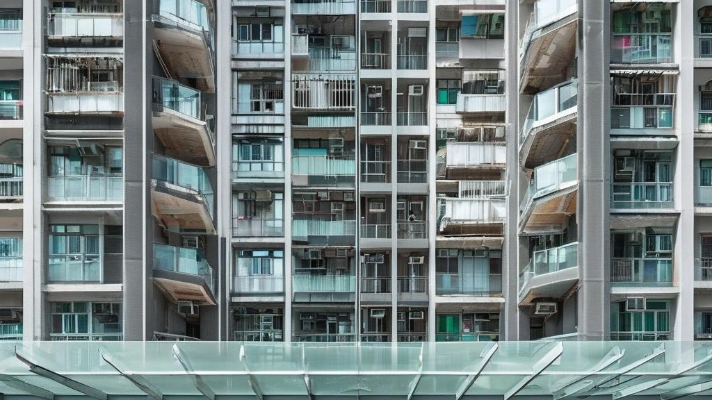
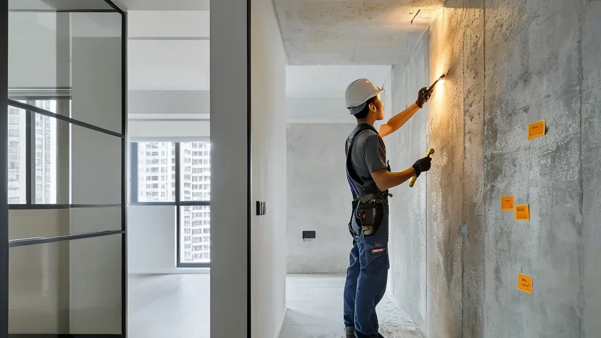
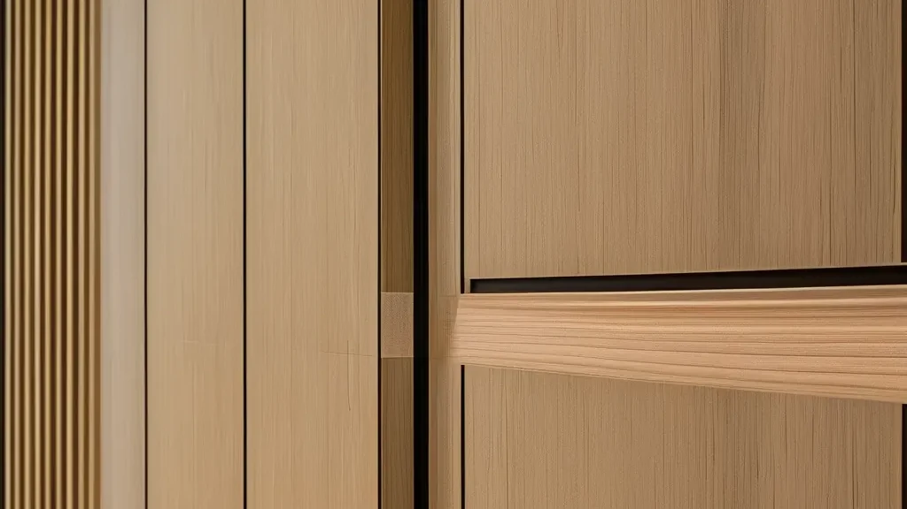
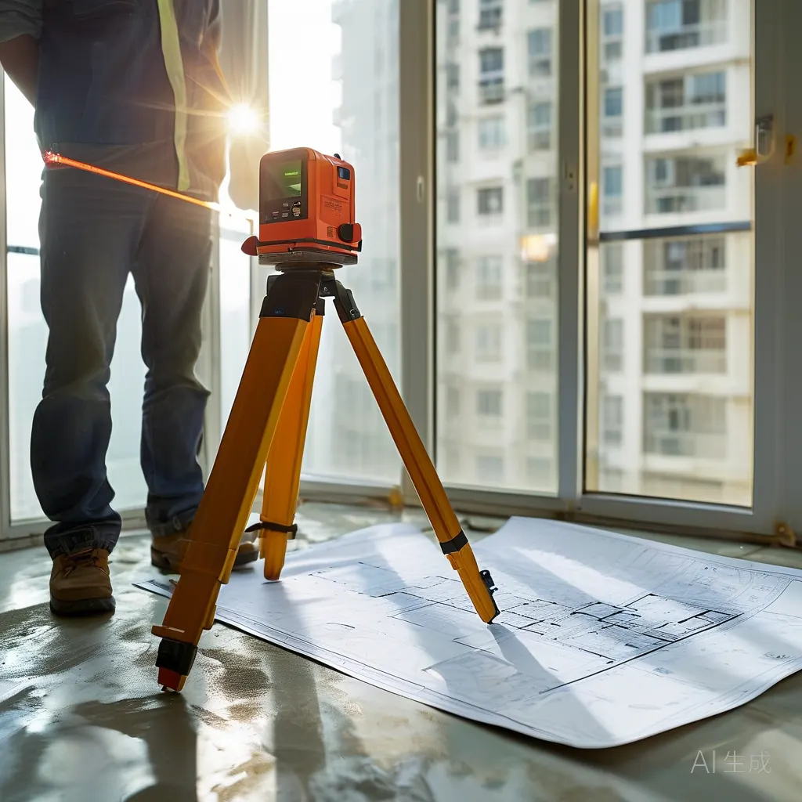
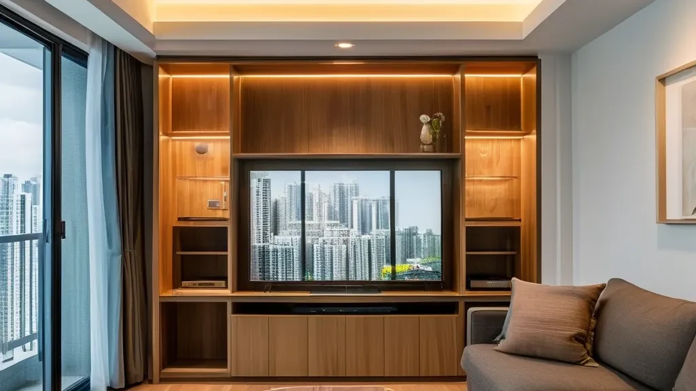

將軍澳480呎新樓：昌哥教你入伙紙到手後幾時訂造傢俬

📍 場景：將軍澳｜主訪：昌哥（28 年泥水）｜記錄：張丹楓｜整理：雲蕾｜日期：2026 年 11 月 20 日｜WhatsApp 報價：852 5190 2328
序幕：三個數字，三種人等緊
2026 年 11 月 19 日下午 3 時，政府新聞公報刊出屋宇署九月資料月報。數字唔花巧，但每一行都對應住一批香港人嘅心情：該月屋宇署發出 21 份入伙紙，其中港島 5 份、九龍 8 份、新界 8 份；住宅用途樓面面積 30,470 平方米，涉及 655 個單位。同一份月報又講，9 月有 4 個建築工程項目獲准動工，完成後提供住宅樓面面積 133,494 平方米，涉及 2,516 個單位；另外 9 月接獲 3,540 宗僭建物舉報，屋宇署發出 771 張清拆令。
21 份入伙紙，講嘅係「有一批人今個月可以攞鎖匙」。2,516 個單位獲准動工，講嘅係「有一批人兩三年後要開始諗裝修」。771 張清拆令，講嘅係「有一批人收信嗰日先知自己間屋有問題」。
我哋每星期都撞到第一種人。佢哋攞住鎖匙、攞住平面圖，第一句多數係：「師傅，幾時可以入場？」而答案，往往唔係佢想聽嘅日子。
第一幕：昌哥話「入伙紙唔等於可以開工」
昌哥做泥水 28 年，將軍澳嘅新盤由第一期做到第十期。嗰朝我哋喺屋苑大堂門外等，佢一路食早餐一路講：「入伙紙係政府話幢樓可以住，唔係話你間屋可以即刻扑。」
「我收樓嗰日就約咗師傅入場，唔係可以快啲咩？租金一個月萬幾蚊，我等唔起。」
「李太，你收樓嗰日攞到嘅係鎖匙，唔係開工紙。新樓第一關係管理處：裝修申請表、按金、師傅登記、指定上落貨時段同升降機保護，樣樣都要交。有啲屋苑仲要求交施工圖，講明邊幅牆唔准動。呢啲手續齊咗，泥水先入得場。」
「咁我唔申請，靜靜雞做咪得囉？」
「做唔到。第一日搬泥頭就會被攔。而且張申請表其實係保護你：將來有咩事，你有紀錄證明邊個做過乜。呢行做得耐就知，最貴嘅從來唔係按金，係事後補救。」

第二幕：牆未乾就裝櫃，係最常見嘅冤枉錢
新樓嘅牆同舊樓唔同。批盪新做，含水率高，摸落去硬，但裡面仲濕。傳統做法要養護，太早封板、太早裝櫃，濕氣走唔出，就會由背板開始發霉，一兩年後打開櫃門一陣味。
「李太想收樓第二個星期就裝衣櫃，因為佢話個廳啲雜物已經堆到冇路行。」
「明，但櫃揹住幅濕牆，等於幫霉菌做個溫室。我哋一般做法係：櫃身用 18mm 多層實木夾板，背板同牆身之間留 10mm 通風隙，背板做防潮封邊；廚櫃位加防潮玻璃膠收邊，304 不鏽鋼鉸鏈配氣壓桿，唔用會生鏽嘅鐵件。呢啲細節唔會令間屋靚十倍，但會令你五年後唔想拆。」
「仲有地台。新樓地台高低差兩三毫米好常見，直接鋪板會空鼓、踩落去有聲。我哋會先做自流平，乾透先上高架地台，龍骨每 30 厘米一條，上面鋪 18mm 夾板。呢兩步加埋，時間多一個星期，但之後十年都唔會吱吱響。」

李太聽完，問咗一句好實際嘅：「咁我到底要等幾耐？」呢個問題，我哋喺第三幕用一張倒推表答佢。
第三幕：由鎖匙到手，倒推 8 個星期
李太個單位喺將軍澳，大約 480 呎，兩房。佢嘅要求好清楚：主人房要一個到頂衣櫃、廳要電視櫃、廚房換廚櫃、細房做高架地台加書枱位。我哋同佢排嘅時間表係咁：
第一步，收樓前 6 至 8 個星期：用發展商圖紙同示範單位度一次「預算尺」，定櫃位、定電掣、定冷氣位。呢個階段未覆實，但可以開始畫圖、揀板材，唔會白等。
第二步，收樓後 7 日內：驗樓。空心磚、窗邊滲水、地台空鼓、門框歪，逐項貼紙影相，交執漏表畀發展商。呢個步驟千祈唔好跳，因為執漏係發展商責任，你入場做完之後再發現，就變成自己嘅問題。
第三步，第 2 至 3 個星期：執漏完成，覆實尺。櫃圖定稿、落單。訂造生產一般 4 至 6 個星期，期間泥水、電、油漆同步做。
第四步，第 7 至 8 個星期：櫃到、安裝。全屋安裝大約 3 至 4 日，之後收口、清潔、驗收。

「即係我收樓之後要成兩個月先住得？」
「如果你由收樓第一日開始計，兩個月已經算快。真正拖時間嘅唔係師傅，係執漏同覆尺。呢兩步做好，後面就順。」
價錢方面，我哋照慣例分項列出：電視櫃約 $11,000、廚櫃約 $13,000 至 $14,000、到頂衣櫃或趟門約 $9,500、高架地台約 $9,000、玻璃隔間約 $4,500、安裝約 $3,000 至 $5,100，套餐總額一般落在 $35,000 至 $38,000 之間。以上係故事報價，實際以度尺為準。
順帶講返月報最後一行：3,540 宗僭建舉報、771 張清拆令。呢批數字提醒我哋另一批業主——買二手樓、村屋或者有天台嘅單位，簽約前一定要睇清楚有冇未清拆嘅搭建物。清拆令係跟單位走，唔係跟賣家走，新業主接手就會接手埋張令。
尾聲：快，唔等於早啲住得
李太最後冇堅持「收樓第二日開工」。佢做咗一件更實際嘅事：收樓前一個月先搵我哋畫圖，收樓第一日去驗樓，第七日交執漏表，第三個星期覆尺落單。佢入伙嗰日，櫃門對得齊，地台踩落去冇聲，厨房櫃底冇水痕。
昌哥收工前講咗一句：「裝修呢行，急嘅人永遠覺得慢；排得清嘅人，反而早啲住得。」我哋都係咁睇。入伙紙係一個開始，唔係一個催命符。把時間表排清楚，比連夜趕工有用得多。

❓ 新樓收樓裝修三問
Q1：入伙紙出咗，係咪即刻可以裝修？
唔係即刻。入伙紙代表樓宇符合法定要求可以入伙，但你間屋仲要向屋苑管理處申請裝修，交按金、師傅登記、施工圖同指定上落貨時段。另外新做批盪要時間乾透，太早封櫃容易發霉。按 2026 年 11 月 19 日公布嘅九月月報，該月有 21 份入伙紙、655 個住宅單位，即係話同期有幾百戶人一齊排隊申請，手續早交早排。
Q2：幾時度尺最合適？
分兩次。第一次喺收樓前 6 至 8 個星期，用圖紙同示範單位做預算尺，定櫃位同電掣；第二次喺執漏完成後覆實尺，先落單生產。訂造生產一般 4 至 6 個星期，安裝 3 至 4 日，全屋由收樓到入住大約 8 個星期。
Q3：全屋訂造大概幾錢？
以 480 呎兩房為例，會分項列出：電視櫃約 $11,000、廚櫃約 $13,000 至 $14,000、到頂衣櫃或趟門約 $9,500、高架地台約 $9,000、玻璃隔間約 $4,500、安裝約 $3,000 至 $5,100，套餐總額一般落在 $35,000 至 $38,000。以上係故事報價，實際以度尺為準。
本文配圖均為 AI 場景示意圖，僅供場景參考，並非真實工地照片或業主影像。
相關文章：上車驗樓唔可以馬虎｜北角 380 呎拆牆改開放式廚房｜天台加建被罰 12 萬
想知你個單位裝修要幾錢？
📱 一鍵 WhatsApp 張丹楓